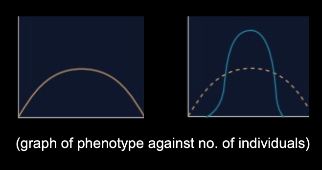
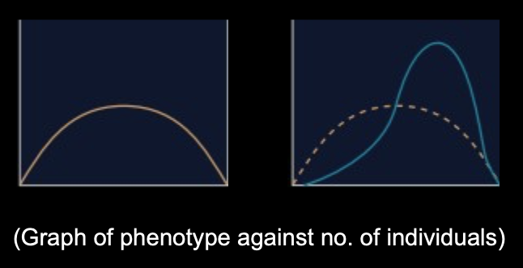
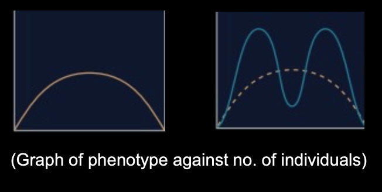

While natural selection always favors individuals with higher fitness, how it changes the population's traits depends on which phenotypes are being selected for or against. This leads to distinct patterns observable in trait distributions, often represented by a bell curve.
Stabilizing Selection
- Concept: This pattern favors intermediate phenotypes (the "average" or "middle" trait value) and selects against the extreme variations at both ends of the spectrum.
- Effect on Population: It reduces variation within the population, making the bell curve narrower and taller around the mean. The average trait value tends to remain stable over time.
- Conditions: Occurs in stable environments where extreme traits are disadvantageous.
- Why it happens: Individuals at the extremes may face higher mortality or reduced reproductive success.
- Heterozygote advantage can lead to stabilizing selection.
- Example: Human Birth Weight
- Observation: Babies born with a moderate weight (e.g., 2.5-4.5 kg) have higher survival rates than very small or very large babies.
- Selection Pressure:
- Very low birth weight: Babies are often premature, have underdeveloped organs, and struggle with heat regulation and disease resistance, leading to higher mortality.
- Very high birth weight: Can lead to complications during childbirth for both mother and baby (e.g., difficult delivery), increasing mortality risk.
- Result: Over generations, the genes for moderate birth weight are favored, and the population mean for birth weight remains relatively stable.

Directional Selection
- Concept: This pattern favors one extreme phenotype over the average or the opposite extreme.
- Effect on Population: It shifts the entire bell curve in one direction (towards the favored extreme). The average trait value changes over time.
- Conditions: Occurs when the environment changes, or when a population migrates to a new environment, making a previously less common trait more advantageous.
- Why it happens: The environment selects for individuals possessing a trait at one end of the spectrum, giving them a survival and reproductive advantage.
- Example: Antibiotic Resistance in Bacteria
- Observation: When an antibiotic is introduced to a bacterial population, most bacteria die, but a few individuals might have a PRE-EXISTING mutation that gives them resistance to the antibiotic. (remember that evolution and natural selection does NOT create new alleles, it just selects for the pre-existing advantageous ones)
- Selection Pressure: The antibiotic acts as a strong selective pressure, killing non-resistant bacteria.
- Result: The resistant bacteria survive and reproduce rapidly, passing on their resistance genes. Over time, the entire bacterial population shifts towards being predominantly antibiotic-resistant. This is why it's crucial to finish antibiotic courses, to minimize the chances for resistant strains to proliferate.

Disruptive Selection (or Diversifying Selection)
- Concept: This pattern favors both extreme phenotypes at the expense of the intermediate forms.
- Effect on Population: It causes the single-peaked bell curve to split into two distinct peaks, representing two different favored phenotypes. It increases variation within the population.
- Conditions: Occurs in heterogeneous environments where different niches or resources favor different extreme traits, and the intermediate trait is disadvantageous in all available niches.
- Why it happens: Individuals with intermediate traits are less "fit" and have lower survival/reproductive rates than those at either extreme.
- Example: African Seedcracker Finches
- Observation: These finches feed on seeds. In their habitat, there are two main types of seeds available: very large, tough seeds and very small, soft seeds.
- Selection Pressure:
- Finches with large beaks are very efficient at cracking the large, tough seeds.
- Finches with small beaks are very efficient at handling the small, soft seeds.
- Finches with medium-sized beaks are not efficient at cracking large seeds (beak too small) nor are they good at handling small seeds (beak too clumsy/large). They struggle to get enough food.
- Result: Over time, individuals with medium beaks are selected against, leading to a population dominated by finches with either large beaks or small beaks. This can eventually lead to the formation of two distinct sub-populations or even new species (speciation).

Written by Kasiban Parthipan